|
Roda JC - Willem II (2-1) 20 januari 2007
|
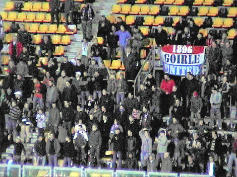
Het cliché-beeld dat de Tilburgers het stilste publiek van het land hebben is al
eerder weerlegd op deze site. Ook vanavond bleek de aanhang van Willem II de
meest fanatieke van Noord-Brabant.
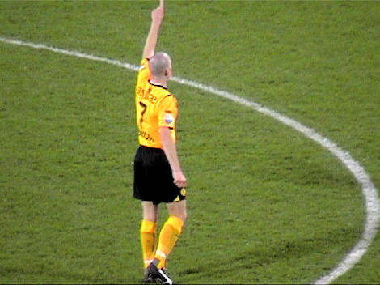
Nieuweling Sibum speelt meteen in de basis. Hij vervangt feitelijk de
geblesseerde
Meeuwis. 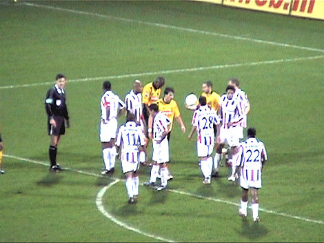
Weinig voetbalplezier maar hier een vrije trap voor Roda.
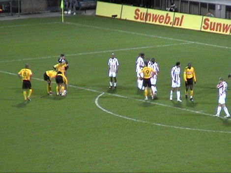
Deze wordt snel genomen door Ramzi... te snel want de treffer wordt afgekeurd.
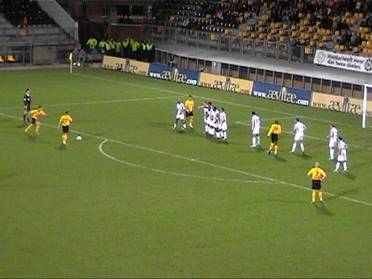
De herkansing met nu een schot door De Fauw.
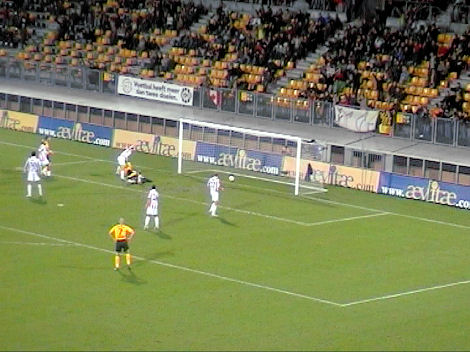
De keeper laat los waarna Cissé er vliegensvlug bij is om de bal in te schieten:
1-0, (26').
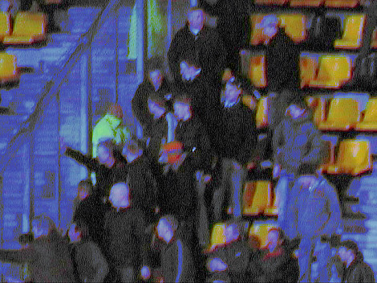
Nadat twee heren op Oost liederen aanheffen over de bloedneus van een speler
van Willem II werd het gastenvak gek.
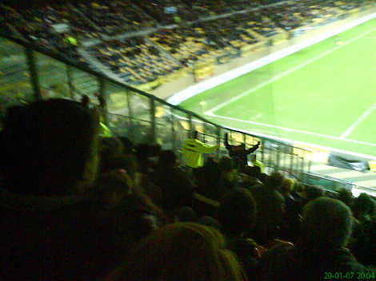
Een van de provocateurs.
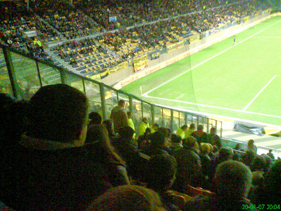
Zij hebben hun "five minutes of fame" gehad.
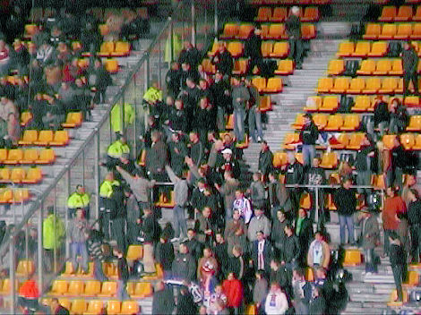
Overwerk voor de stewards.

Achtereenvolgens Sibum en Cissé kunnen een solo van Hadouir niet stoppen
waarna De Fauw te laat komt om Bobson van scoren af te houden: 1-1, (39').
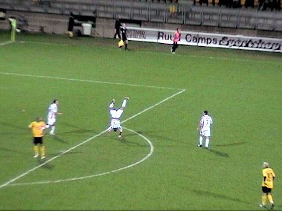
Zo kun je een doelpunt ook vieren.
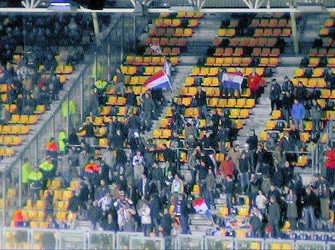
Vlaggetjesdag in het gastenvak.
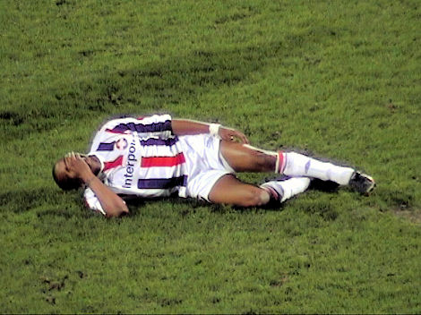
Alweer een bloedneus?
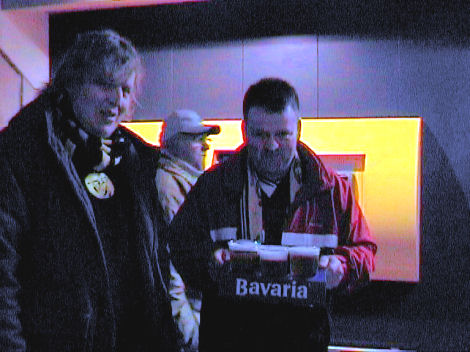
Na een slechte eerste helft is het tijd voor een Bavaria, u allen geserveerd
door P.
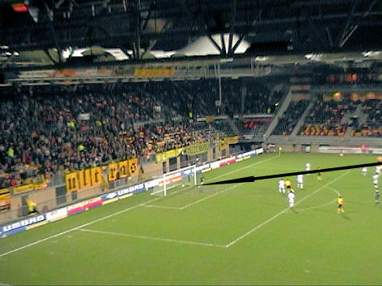
Van grote afstand schiet Agustien de bal voorbij Sengier: 2-1, (55').
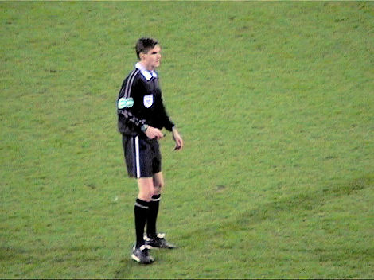
Braamhaar floot opzichtig in het nadeel van Roda met als dieptepunt het niet
toekennen van een penalty toen Van Tornhout binnen de zestien werd neergelegd.
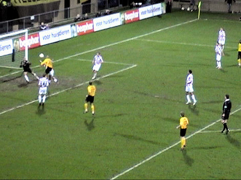
Roda speelt veel dwingender in de tweede helft. Bij vlagen wordt Willem II zelfs
weggespeeld. Hier een prima kopbal van Ramzi die even prima wordt gered door
Sengier.
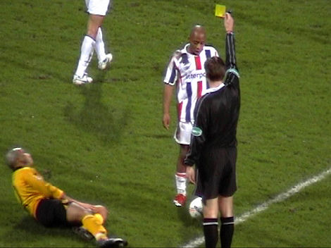
Ramzi is net buiten de zestien onderuitgehaald door Hill die daarvoor de gele
kaart krijgt.
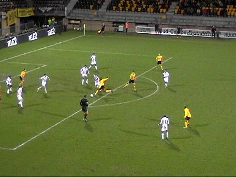
Uitstekende kans voor Cissé om de wedstrijd te beslissen maar zijn schot gaat
net naast de paal.
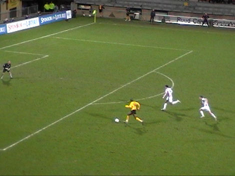
Cissé alleen op de doelman af maar hij legt de bal terug op De Jong.
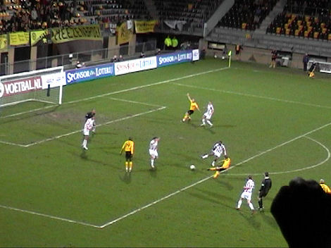
Deze schiet vervolgens ver naast.
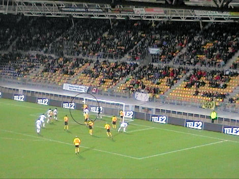
In het laatste kwartier zakt Roda weer in. Bijna scoort Willem II de gelijkmaker
maar Lachambre redt knap op de doellijn.
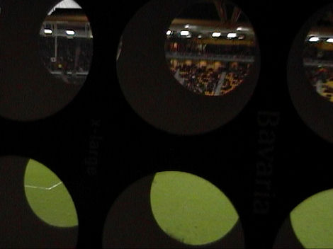
Zo ziet het PLS eruit door een Baf-blad.
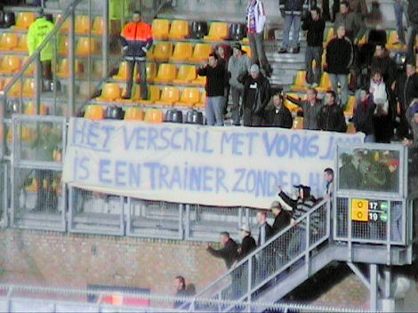
Ongekende humor van de W2-suporters.
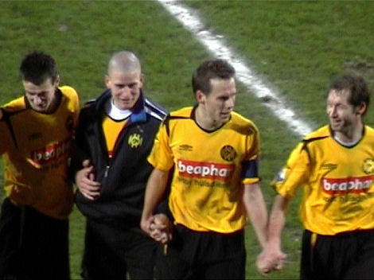
Sibum die eerder werd gewisseld voor Leemans mag meedoen aan de wave met
het publiek.
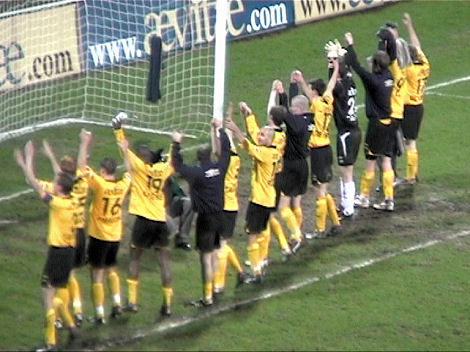
Deze driepunter was hoognodig!
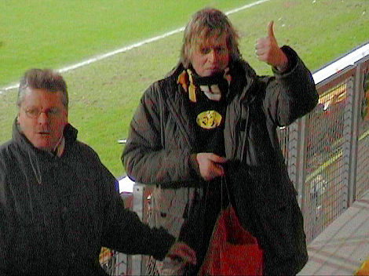
De verzorgers van de Z16*KOEMPELS*Z16 vaan.
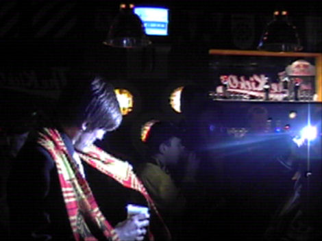
Het was zeer druk in de Kickoff. O.a. Huub Narinx en Kevin van Dessel mengden
zich onder het publiek.
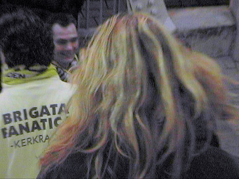
Het is de laatste tijd zwaar concurreren met de lieden van Brigata Fanatica om
de
eer wie de lamp uit mag doen. © Koempels Pleasure Dome
|